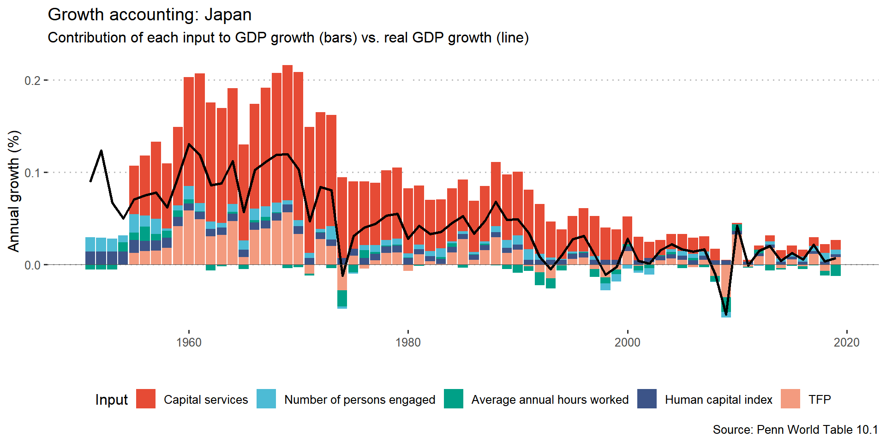
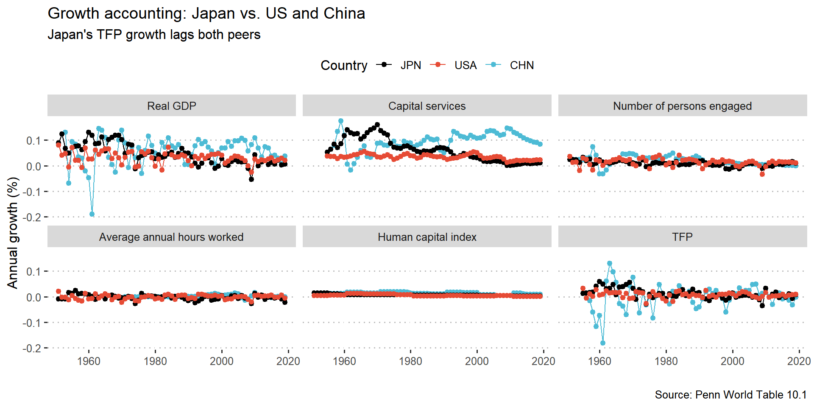
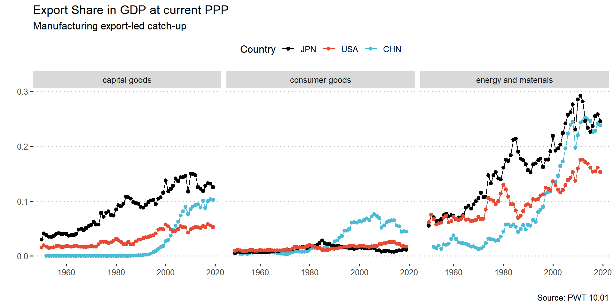
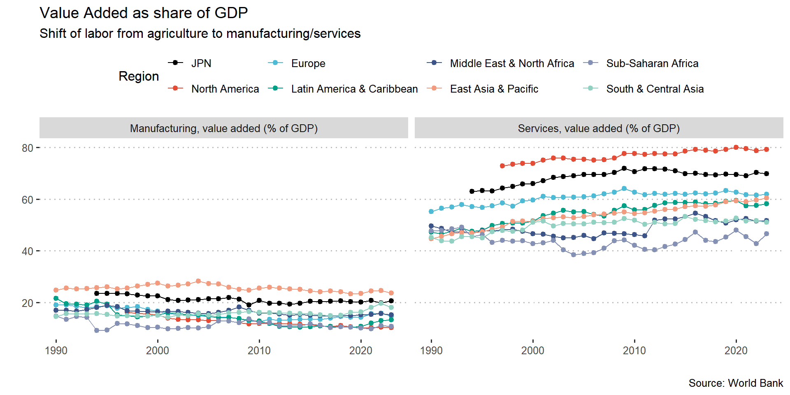
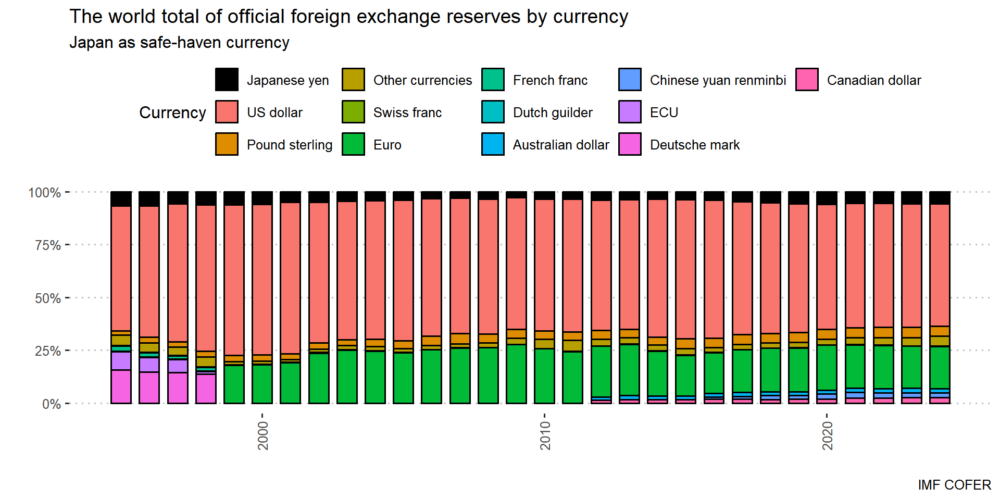
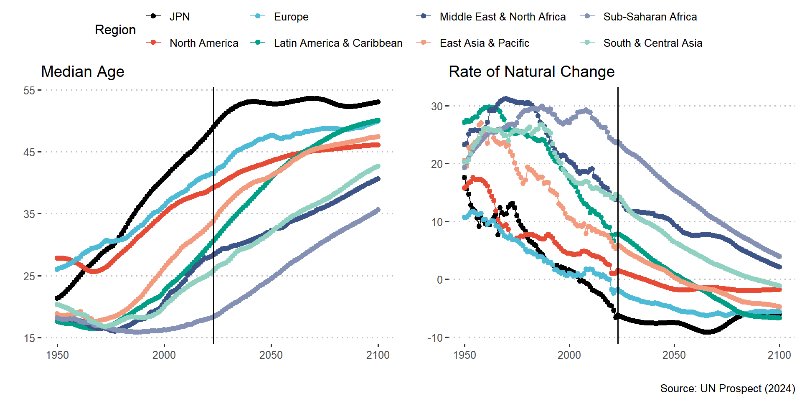
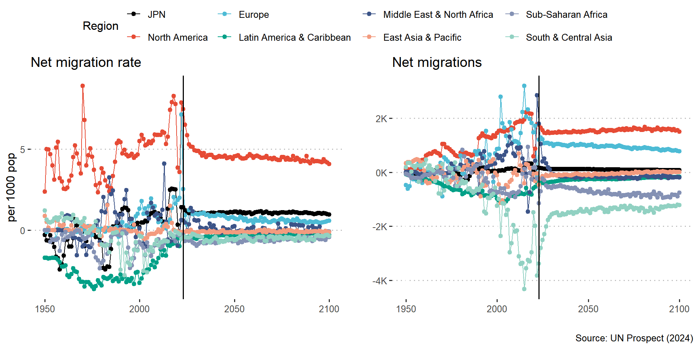

More inputs: working more hours, employing more people, building more capital, or having a more educated workforce
Using inputs better: technology, efficiency, and innovation that let the same inputs produce more output (this is called Total Factor Productivity, or TFP)
Growth accounting: Japan

Growth drivers across countries

Export-led growth

Structural shift

Role of currency
Store of value: held as reserves by central banks and investors
Medium of exchange: used to invoice and settle cross-border trade, even between two other countries
Unit of account: used to price global assets like oil, or benchmark other currencies against
Yen as store of value

Why demographics matter
Growth drivers: labor supply directly feeds into the growth accounting framework
Market size: a country’s population sets the scale of domestic demand
Consumption: a population’s age structure drives spending patterns
Saving: national saving rates (working-age people save for retirement; retirees draw savings down)
Aging economy (population)

Aging economy (immigration)

Japan at a glance: takeaways
High-income: Japan converged with advanced economies decades ago, but stalled since the 1990s
Growth model: Initially investment- and export-led, with rising TFP but since the 1990s, all drivers slowed
Safe-haven currency: the yen has held a stable share of global reserves for decades
Aging economy: a shrinking, aging population is now squeezing the labor input directly